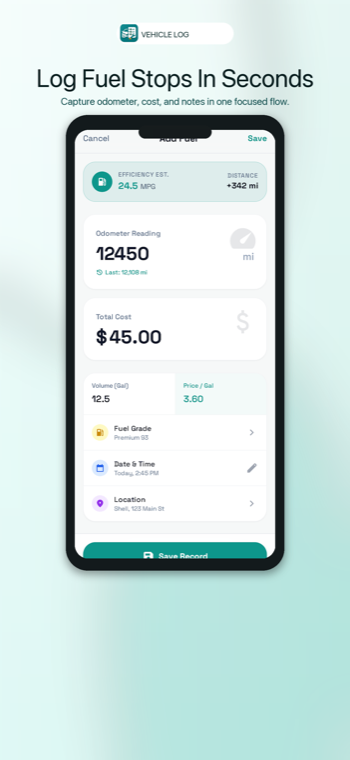
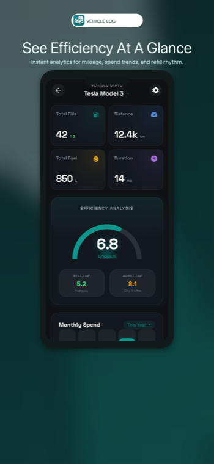
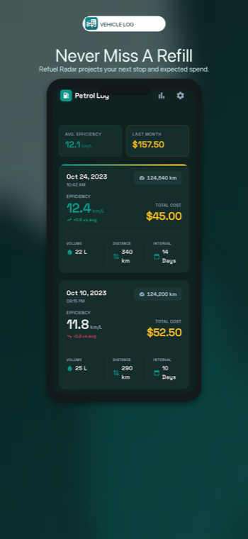
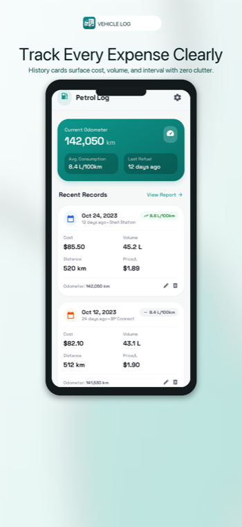
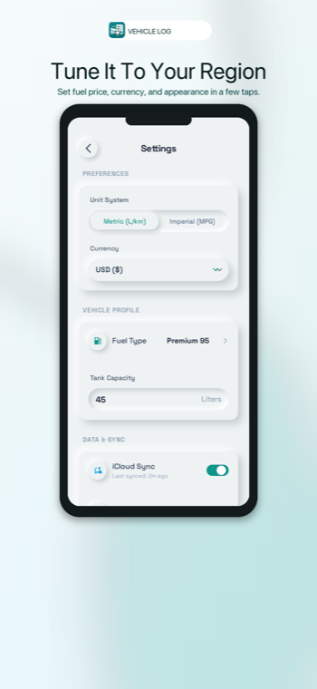

Track service before it slips
Log oil changes, inspections, repairs, tires, batteries, insurance, and other service work with next due dates or odometer targets.
Offline vehicle records
Keep maintenance, repairs, inspections, fuel purchases, mileage, and spend in one clear history for every vehicle you own.
Vehicle Logbook is built around the routines drivers repeat: log what happened, see what is due, and understand how ownership costs are moving over time.
Log oil changes, inspections, repairs, tires, batteries, insurance, and other service work with next due dates or odometer targets.
Capture date, odometer, fuel type, spend, and notes. The app estimates volume from your configured price per liter.
Fuel and maintenance entries sit together in a chronological timeline, so the full story of each vehicle stays readable.
Estimate your next refill window, projected odometer, cycle length, expected spend, and urgency state from recent fuel behavior.
Review totals, average fill cost, monthly spending, efficiency ranges, distance, duration, and fuel volume across your history.
Manage vehicles, fuel types, fuel prices, currency, CSV import, and light or dark appearance from one settings flow.
The interface keeps status, recent activity, and next actions visible without turning vehicle care into a spreadsheet.





Privacy posture
The app has no backend service, no account system, no ads, and no analytics package. CSV files are read only when you choose one for import.
Short answers for practical ownership, privacy, and support concerns.
Yes. Vehicle Logbook supports multiple vehicles and keeps records associated with the vehicle you select.
No. The app stores records locally and does not include network services for account sync or analytics.
Yes. The settings flow includes CSV import for historical fuel records in common date formats.
Local app data may be deleted by the operating system. Keep your own backups before uninstalling or replacing a device.
Use the website links for App Store Connect, Google Play Console, customer support, and public product information.